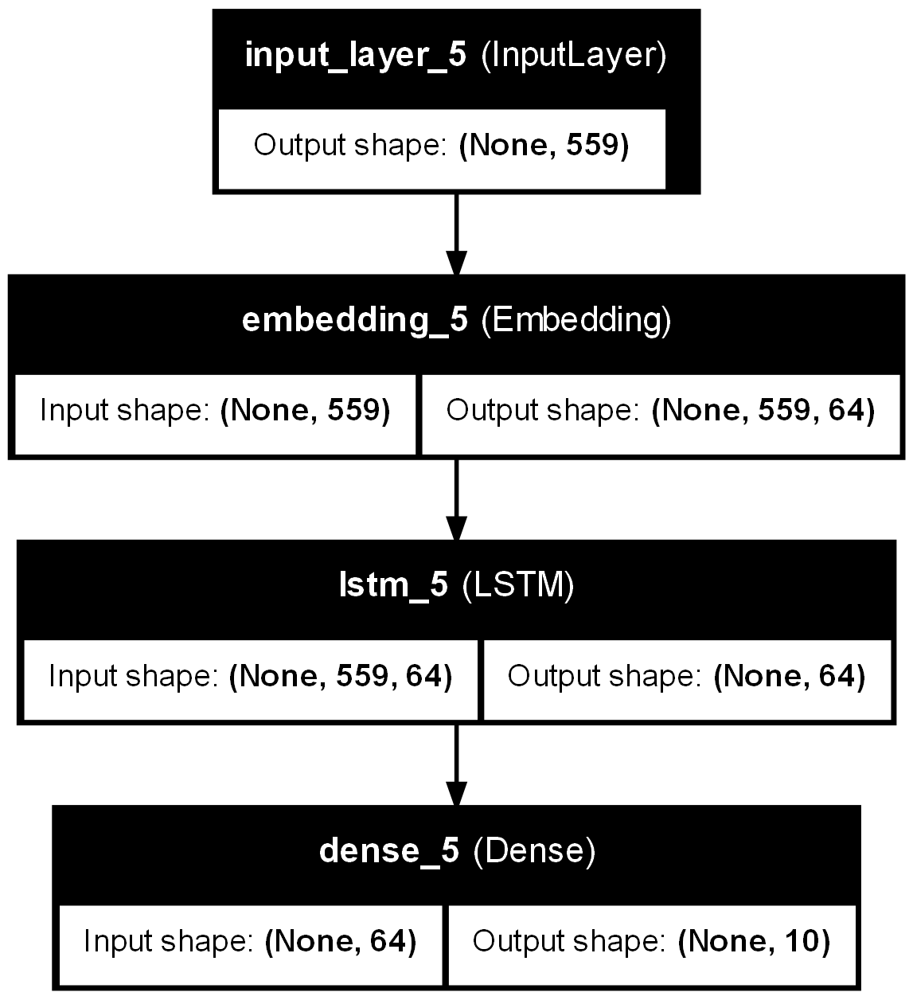

import pandas as pdText Classification with Naive Bayes
from sklearn.feature_extraction.text import TfidfVectorizer
from sklearn.preprocessing import OneHotEncoder
from sklearn.compose import ColumnTransformer
from sklearn.pipeline import Pipeline
from sklearn.naive_bayes import MultinomialNB
from sklearn.model_selection import train_test_split
from sklearn.metrics import classification_report
# Data loading and preprocessing
df = pd.read_csv('main.csv')
df = df[['TITLE', 'sentiment', 'emotion','ARTICLE', 'AUTHOR']]
# Column Transformer to handle different feature types
preprocessor = ColumnTransformer(
transformers=[
('tfidf1', TfidfVectorizer(stop_words='english'), 'TITLE'),
('tfidf2', TfidfVectorizer(stop_words='english'), 'ARTICLE'),
('onehot', OneHotEncoder(), ['sentiment', 'emotion'])
])
# Pipeline to vectorize text and train model
pipeline = Pipeline([
('preprocessor', preprocessor),
('classifier', MultinomialNB())
])
# Training and prediction
X_train, X_test, y_train, y_test = train_test_split(df.drop('AUTHOR', axis=1), df['AUTHOR'], test_size=0.3, random_state=42)pipeline.fit(X_train, y_train)
y_pred = pipeline.predict(X_test)
print(classification_report(y_test, y_pred)) precision recall f1-score support
Associated Press 0.79 0.60 0.68 937
Axios 0.83 0.44 0.58 1511
Dave Quinn 0.78 0.92 0.85 1500
Field Level Media 0.85 0.99 0.92 1509
John Bowden 0.39 0.75 0.51 1489
Julia Manchester 0.61 0.57 0.59 1521
People Staff 1.00 0.87 0.93 1402
Rebecca Savransky 0.68 0.66 0.67 1523
The Associated Press 0.83 0.57 0.68 1510
WIRED Staff 0.90 0.78 0.83 1500
accuracy 0.72 14402
macro avg 0.76 0.72 0.72 14402
weighted avg 0.76 0.72 0.72 14402
Text Classification with Logistic Regression
from sklearn.feature_extraction.text import TfidfVectorizer
from sklearn.preprocessing import OneHotEncoder
from sklearn.compose import ColumnTransformer
from sklearn.pipeline import Pipeline
from sklearn.naive_bayes import MultinomialNB
from sklearn.model_selection import train_test_split
from sklearn.metrics import classification_report
from sklearn.linear_model import LogisticRegression
df = pd.read_csv('main.csv')
df = df[['TITLE', 'sentiment', 'emotion','ARTICLE', 'AUTHOR']]
# Column Transformer to handle different feature types
preprocessor = ColumnTransformer(
transformers=[
('tfidf1', TfidfVectorizer(stop_words='english'), 'TITLE'),
('tfidf2', TfidfVectorizer(stop_words='english'), 'ARTICLE'),
('onehot', OneHotEncoder(), ['sentiment', 'emotion'])
])
# Pipeline to vectorize text and train model
pipeline = Pipeline([
('preprocessor', preprocessor),
('classifier', LogisticRegression(C=1.0, random_state=42))
])
# Training and prediction
pipeline.fit(X_train, y_train)
y_pred = pipeline.predict(X_test)
print(classification_report(y_test, y_pred))c:\Users\srinivas\anaconda3\Lib\site-packages\sklearn\linear_model\_logistic.py:469: ConvergenceWarning: lbfgs failed to converge (status=1):
STOP: TOTAL NO. of ITERATIONS REACHED LIMIT.
Increase the number of iterations (max_iter) or scale the data as shown in:
https://scikit-learn.org/stable/modules/preprocessing.html
Please also refer to the documentation for alternative solver options:
https://scikit-learn.org/stable/modules/linear_model.html#logistic-regression
n_iter_i = _check_optimize_result( precision recall f1-score support
Associated Press 0.96 0.93 0.94 937
Axios 0.93 0.92 0.92 1511
Dave Quinn 0.89 0.95 0.92 1500
Field Level Media 0.97 0.99 0.98 1509
John Bowden 0.76 0.86 0.81 1489
Julia Manchester 0.86 0.74 0.79 1521
People Staff 1.00 0.88 0.94 1402
Rebecca Savransky 0.83 0.84 0.84 1523
The Associated Press 0.93 0.90 0.92 1510
WIRED Staff 0.89 0.96 0.92 1500
accuracy 0.90 14402
macro avg 0.90 0.90 0.90 14402
weighted avg 0.90 0.90 0.90 14402
Text Classification with Support Vector Classifier (SVC)
from sklearn.svm import SVC
from sklearn.feature_extraction.text import TfidfVectorizer
from sklearn.preprocessing import OneHotEncoder
from sklearn.compose import ColumnTransformer
from sklearn.pipeline import Pipeline
from sklearn.naive_bayes import MultinomialNB
from sklearn.model_selection import train_test_split
from sklearn.metrics import classification_report
from sklearn.linear_model import LogisticRegression
# Data loading and preprocessing
df = pd.read_csv('main.csv')
df = df[['TITLE', 'sentiment', 'emotion','ARTICLE', 'AUTHOR']]
# Column Transformer to handle different feature types
preprocessor = ColumnTransformer(
transformers=[
('tfidf1', TfidfVectorizer(stop_words='english'), 'TITLE'),
('tfidf2', TfidfVectorizer(stop_words='english'), 'ARTICLE'),
('onehot', OneHotEncoder(), ['sentiment', 'emotion'])
])
# Pipeline to vectorize text and train model
pipeline = Pipeline([
('preprocessor', preprocessor),
('classifier', SVC(kernel='rbf', C=1.0, random_state=42))
])
# Training and prediction
pipeline.fit(X_train, y_train)
y_pred = pipeline.predict(X_test)
print(classification_report(y_test, y_pred)) precision recall f1-score support
Associated Press 0.95 0.89 0.92 937
Axios 0.90 0.89 0.90 1511
Dave Quinn 0.89 0.94 0.91 1500
Field Level Media 0.97 0.99 0.98 1509
John Bowden 0.66 0.90 0.76 1489
Julia Manchester 0.88 0.61 0.72 1521
People Staff 1.00 0.88 0.93 1402
Rebecca Savransky 0.82 0.78 0.80 1523
The Associated Press 0.92 0.89 0.90 1510
WIRED Staff 0.85 0.95 0.90 1500
accuracy 0.87 14402
macro avg 0.88 0.87 0.87 14402
weighted avg 0.88 0.87 0.87 14402
author_counts = df['AUTHOR'].value_counts()
# Filter to get the top 5 authors
top_authors = author_counts.head(25)
# Creating the bar graph using Plotly
# fig = px.bar(top_authors,
# x=top_authors.index,
# y=top_authors.values,
# title='Top 5 Authors by Number of Articles',
# labels={'x': 'Author', 'y': 'Number of Articles'},
# text=top_authors.values)
# # Add customization: show the exact count on top of each bar
# fig.update_traces(texttemplate='%{text}', textposition='outside')
# # Show the plot
# fig.show()top_authors = author_counts.head(10)top_authorsAUTHOR
WIRED Staff 15815
Associated Press 9215
Field Level Media 7930
John Bowden 7021
The Associated Press 6432
Rebecca Savransky 5822
Julia Manchester 5448
People Staff 5393
Axios 5275
Dave Quinn 5017
Name: count, dtype: int64# Assuming 'df' is your original DataFrame
top_authors_df = df2[df2['AUTHOR'].isin(top_authors.index)]# Group by 'AUTHOR' and apply the head() function to limit to 200 entries per author
downsampled_df = top_authors_df.groupby('AUTHOR').head(5017)len(downsampled_df)50170from sklearn.feature_extraction.text import TfidfVectorizer
from sklearn.model_selection import train_test_split
from sklearn.naive_bayes import MultinomialNB
from sklearn.metrics import classification_reportfrom sklearn.feature_extraction.text import TfidfVectorizer
# Assuming 'downsampled_df' is your DataFrame with 'TITLE' and 'AUTHOR'
vectorizer = TfidfVectorizer(stop_words='english', max_features=1000)
X = vectorizer.fit_transform(downsampled_df['TITLE'])
y = downsampled_df['AUTHOR']from sklearn.model_selection import train_test_split
X_train, X_test, y_train, y_test = train_test_split(X, y, test_size=0.3, random_state=42)from sklearn.naive_bayes import MultinomialNB
model = MultinomialNB()model.fit(X_train, y_train)MultinomialNB()In a Jupyter environment, please rerun this cell to show the HTML representation or trust the notebook.
On GitHub, the HTML representation is unable to render, please try loading this page with nbviewer.org.
MultinomialNB()
from sklearn.metrics import classification_report
y_pred = model.predict(X_test)
print(classification_report(y_test, y_pred)) precision recall f1-score support
Associated Press 0.57 0.55 0.56 1561
Axios 0.61 0.37 0.47 1555
Dave Quinn 0.49 0.61 0.54 1446
Field Level Media 0.76 0.93 0.84 1469
John Bowden 0.36 0.44 0.39 1451
Julia Manchester 0.45 0.46 0.46 1482
People Staff 0.69 0.60 0.64 1501
Rebecca Savransky 0.45 0.53 0.49 1558
The Associated Press 0.58 0.39 0.47 1553
WIRED Staff 0.61 0.64 0.62 1475
accuracy 0.55 15051
macro avg 0.56 0.55 0.55 15051
weighted avg 0.56 0.55 0.55 15051
from sklearn.metrics import accuracy_score
accuracy = accuracy_score(y_test, y_pred)
print(f"Accuracy: {accuracy * 100:.2f}%")Accuracy: 55.05%!python -m spacy download en_core_web_smCollecting en-core-web-sm==3.7.1
Downloading https://github.com/explosion/spacy-models/releases/download/en_core_web_sm-3.7.1/en_core_web_sm-3.7.1-py3-none-any.whl (12.8 MB)
---------------------------------------- 0.0/12.8 MB ? eta -:--:--
--------------------------------------- 0.0/12.8 MB 330.3 kB/s eta 0:00:39
---------------------------------------- 0.1/12.8 MB 1.1 MB/s eta 0:00:13
- -------------------------------------- 0.6/12.8 MB 4.3 MB/s eta 0:00:03
--- ------------------------------------ 1.0/12.8 MB 5.6 MB/s eta 0:00:03
---- ----------------------------------- 1.3/12.8 MB 6.3 MB/s eta 0:00:02
----- ---------------------------------- 1.7/12.8 MB 6.1 MB/s eta 0:00:02
------- -------------------------------- 2.2/12.8 MB 7.2 MB/s eta 0:00:02
-------- ------------------------------- 2.6/12.8 MB 7.2 MB/s eta 0:00:02
--------- ------------------------------ 3.1/12.8 MB 7.6 MB/s eta 0:00:02
----------- ---------------------------- 3.7/12.8 MB 7.8 MB/s eta 0:00:02
------------- -------------------------- 4.3/12.8 MB 8.3 MB/s eta 0:00:02
--------------- ------------------------ 4.9/12.8 MB 8.9 MB/s eta 0:00:01
---------------- ----------------------- 5.4/12.8 MB 9.1 MB/s eta 0:00:01
----------------- ---------------------- 5.7/12.8 MB 8.7 MB/s eta 0:00:01
------------------- -------------------- 6.3/12.8 MB 9.1 MB/s eta 0:00:01
--------------------- ------------------ 6.9/12.8 MB 9.2 MB/s eta 0:00:01
----------------------- ---------------- 7.5/12.8 MB 9.4 MB/s eta 0:00:01
------------------------ --------------- 7.8/12.8 MB 9.6 MB/s eta 0:00:01
--------------------------- ------------ 8.7/12.8 MB 9.8 MB/s eta 0:00:01
---------------------------- ----------- 9.3/12.8 MB 9.9 MB/s eta 0:00:01
------------------------------ --------- 9.9/12.8 MB 10.0 MB/s eta 0:00:01
------------------------------- ------- 10.4/12.8 MB 11.1 MB/s eta 0:00:01
--------------------------------- ----- 11.1/12.8 MB 11.3 MB/s eta 0:00:01
----------------------------------- --- 11.7/12.8 MB 11.5 MB/s eta 0:00:01
------------------------------------- - 12.2/12.8 MB 11.7 MB/s eta 0:00:01
-------------------------------------- 12.8/12.8 MB 11.9 MB/s eta 0:00:01
--------------------------------------- 12.8/12.8 MB 11.5 MB/s eta 0:00:00
Requirement already satisfied: spacy<3.8.0,>=3.7.2 in c:\users\srinivas\anaconda3\lib\site-packages (from en-core-web-sm==3.7.1) (3.7.4)
Requirement already satisfied: spacy-legacy<3.1.0,>=3.0.11 in c:\users\srinivas\anaconda3\lib\site-packages (from spacy<3.8.0,>=3.7.2->en-core-web-sm==3.7.1) (3.0.12)
Requirement already satisfied: spacy-loggers<2.0.0,>=1.0.0 in c:\users\srinivas\anaconda3\lib\site-packages (from spacy<3.8.0,>=3.7.2->en-core-web-sm==3.7.1) (1.0.5)
Requirement already satisfied: murmurhash<1.1.0,>=0.28.0 in c:\users\srinivas\anaconda3\lib\site-packages (from spacy<3.8.0,>=3.7.2->en-core-web-sm==3.7.1) (1.0.10)
Requirement already satisfied: cymem<2.1.0,>=2.0.2 in c:\users\srinivas\anaconda3\lib\site-packages (from spacy<3.8.0,>=3.7.2->en-core-web-sm==3.7.1) (2.0.8)
Requirement already satisfied: preshed<3.1.0,>=3.0.2 in c:\users\srinivas\anaconda3\lib\site-packages (from spacy<3.8.0,>=3.7.2->en-core-web-sm==3.7.1) (3.0.9)
Requirement already satisfied: thinc<8.3.0,>=8.2.2 in c:\users\srinivas\anaconda3\lib\site-packages (from spacy<3.8.0,>=3.7.2->en-core-web-sm==3.7.1) (8.2.3)
Requirement already satisfied: wasabi<1.2.0,>=0.9.1 in c:\users\srinivas\anaconda3\lib\site-packages (from spacy<3.8.0,>=3.7.2->en-core-web-sm==3.7.1) (1.1.2)
Requirement already satisfied: srsly<3.0.0,>=2.4.3 in c:\users\srinivas\anaconda3\lib\site-packages (from spacy<3.8.0,>=3.7.2->en-core-web-sm==3.7.1) (2.4.8)
Requirement already satisfied: catalogue<2.1.0,>=2.0.6 in c:\users\srinivas\anaconda3\lib\site-packages (from spacy<3.8.0,>=3.7.2->en-core-web-sm==3.7.1) (2.0.10)
Requirement already satisfied: weasel<0.4.0,>=0.1.0 in c:\users\srinivas\anaconda3\lib\site-packages (from spacy<3.8.0,>=3.7.2->en-core-web-sm==3.7.1) (0.3.4)
Requirement already satisfied: typer<0.10.0,>=0.3.0 in c:\users\srinivas\anaconda3\lib\site-packages (from spacy<3.8.0,>=3.7.2->en-core-web-sm==3.7.1) (0.9.4)
Requirement already satisfied: smart-open<7.0.0,>=5.2.1 in c:\users\srinivas\anaconda3\lib\site-packages (from spacy<3.8.0,>=3.7.2->en-core-web-sm==3.7.1) (5.2.1)
Requirement already satisfied: tqdm<5.0.0,>=4.38.0 in c:\users\srinivas\anaconda3\lib\site-packages (from spacy<3.8.0,>=3.7.2->en-core-web-sm==3.7.1) (4.65.0)
Requirement already satisfied: requests<3.0.0,>=2.13.0 in c:\users\srinivas\anaconda3\lib\site-packages (from spacy<3.8.0,>=3.7.2->en-core-web-sm==3.7.1) (2.31.0)
Requirement already satisfied: pydantic!=1.8,!=1.8.1,<3.0.0,>=1.7.4 in c:\users\srinivas\anaconda3\lib\site-packages (from spacy<3.8.0,>=3.7.2->en-core-web-sm==3.7.1) (1.10.8)
Requirement already satisfied: jinja2 in c:\users\srinivas\anaconda3\lib\site-packages (from spacy<3.8.0,>=3.7.2->en-core-web-sm==3.7.1) (3.1.2)
Requirement already satisfied: setuptools in c:\users\srinivas\anaconda3\lib\site-packages (from spacy<3.8.0,>=3.7.2->en-core-web-sm==3.7.1) (68.0.0)
Requirement already satisfied: packaging>=20.0 in c:\users\srinivas\anaconda3\lib\site-packages (from spacy<3.8.0,>=3.7.2->en-core-web-sm==3.7.1) (23.2)
Requirement already satisfied: langcodes<4.0.0,>=3.2.0 in c:\users\srinivas\anaconda3\lib\site-packages (from spacy<3.8.0,>=3.7.2->en-core-web-sm==3.7.1) (3.3.0)
Requirement already satisfied: numpy>=1.19.0 in c:\users\srinivas\anaconda3\lib\site-packages (from spacy<3.8.0,>=3.7.2->en-core-web-sm==3.7.1) (1.26.4)
Requirement already satisfied: typing-extensions>=4.2.0 in c:\users\srinivas\anaconda3\lib\site-packages (from pydantic!=1.8,!=1.8.1,<3.0.0,>=1.7.4->spacy<3.8.0,>=3.7.2->en-core-web-sm==3.7.1) (4.11.0)
Requirement already satisfied: charset-normalizer<4,>=2 in c:\users\srinivas\anaconda3\lib\site-packages (from requests<3.0.0,>=2.13.0->spacy<3.8.0,>=3.7.2->en-core-web-sm==3.7.1) (2.0.4)
Requirement already satisfied: idna<4,>=2.5 in c:\users\srinivas\anaconda3\lib\site-packages (from requests<3.0.0,>=2.13.0->spacy<3.8.0,>=3.7.2->en-core-web-sm==3.7.1) (2.10)
Requirement already satisfied: urllib3<3,>=1.21.1 in c:\users\srinivas\anaconda3\lib\site-packages (from requests<3.0.0,>=2.13.0->spacy<3.8.0,>=3.7.2->en-core-web-sm==3.7.1) (1.26.16)
Requirement already satisfied: certifi>=2017.4.17 in c:\users\srinivas\anaconda3\lib\site-packages (from requests<3.0.0,>=2.13.0->spacy<3.8.0,>=3.7.2->en-core-web-sm==3.7.1) (2024.2.2)
Requirement already satisfied: blis<0.8.0,>=0.7.8 in c:\users\srinivas\anaconda3\lib\site-packages (from thinc<8.3.0,>=8.2.2->spacy<3.8.0,>=3.7.2->en-core-web-sm==3.7.1) (0.7.11)
Requirement already satisfied: confection<1.0.0,>=0.0.1 in c:\users\srinivas\anaconda3\lib\site-packages (from thinc<8.3.0,>=8.2.2->spacy<3.8.0,>=3.7.2->en-core-web-sm==3.7.1) (0.1.4)
Requirement already satisfied: colorama in c:\users\srinivas\anaconda3\lib\site-packages (from tqdm<5.0.0,>=4.38.0->spacy<3.8.0,>=3.7.2->en-core-web-sm==3.7.1) (0.4.6)
Requirement already satisfied: click<9.0.0,>=7.1.1 in c:\users\srinivas\anaconda3\lib\site-packages (from typer<0.10.0,>=0.3.0->spacy<3.8.0,>=3.7.2->en-core-web-sm==3.7.1) (8.0.4)
Requirement already satisfied: cloudpathlib<0.17.0,>=0.7.0 in c:\users\srinivas\anaconda3\lib\site-packages (from weasel<0.4.0,>=0.1.0->spacy<3.8.0,>=3.7.2->en-core-web-sm==3.7.1) (0.16.0)
Requirement already satisfied: MarkupSafe>=2.0 in c:\users\srinivas\anaconda3\lib\site-packages (from jinja2->spacy<3.8.0,>=3.7.2->en-core-web-sm==3.7.1) (2.1.1)
✔ Download and installation successful
You can now load the package via spacy.load('en_core_web_sm')Lemmatization
Using spaCy’s English language model (en_core_web_sm), the lemmatize_texts function lemmatizes the text data in batches, removing stopwords and returning the lemmatized texts. This process is applied to the ‘TITLE’ column of the DataFrame.
import spacy
nlp = spacy.load('en_core_web_sm', disable=['parser', 'ner'])
def lemmatize_texts(docs):
# Process texts as a batch and return them
return [" ".join([token.lemma_ for token in doc if not token.is_stop]) for doc in nlp.pipe(docs)]
# Applying the function to batches of the data
downsampled_df['cleaned'] = lemmatize_texts(downsampled_df['TITLE'])C:\Users\srinivas\AppData\Local\Temp\ipykernel_2108\3187373265.py:9: SettingWithCopyWarning:
A value is trying to be set on a copy of a slice from a DataFrame.
Try using .loc[row_indexer,col_indexer] = value instead
See the caveats in the documentation: https://pandas.pydata.org/pandas-docs/stable/user_guide/indexing.html#returning-a-view-versus-a-copy
downsampled_df['cleaned'] = lemmatize_texts(downsampled_df['TITLE'])from sklearn.feature_extraction.text import ENGLISH_STOP_WORDS
custom_stop_words = list(ENGLISH_STOP_WORDS) + ['additional', 'stopwords']
vectorizer = TfidfVectorizer(stop_words=custom_stop_words)vectorizer = TfidfVectorizer(min_df=3, max_df=0.7, ngram_range=(1, 3))
X = vectorizer.fit_transform(df['cleaned'])y = df['AUTHOR']X_train, X_test, y_train, y_test = train_test_split(X, y, test_size=0.3, random_state=42)model = MultinomialNB()model.fit(X_train, y_train)MultinomialNB()In a Jupyter environment, please rerun this cell to show the HTML representation or trust the notebook.
On GitHub, the HTML representation is unable to render, please try loading this page with nbviewer.org.
MultinomialNB()
from sklearn.metrics import classification_report
y_pred = model.predict(X_test)
print(classification_report(y_test, y_pred)) precision recall f1-score support
Associated Press 0.64 0.71 0.67 1561
Axios 0.74 0.52 0.61 1555
Dave Quinn 0.72 0.72 0.72 1446
Field Level Media 0.83 0.98 0.90 1469
John Bowden 0.38 0.51 0.44 1451
Julia Manchester 0.49 0.50 0.49 1482
People Staff 0.79 0.75 0.77 1501
Rebecca Savransky 0.53 0.55 0.54 1558
The Associated Press 0.76 0.51 0.61 1553
WIRED Staff 0.77 0.79 0.78 1475
accuracy 0.65 15051
macro avg 0.66 0.65 0.65 15051
weighted avg 0.66 0.65 0.65 15051
from sklearn.metrics import accuracy_score
accuracy = accuracy_score(y_test, y_pred)
print(f"Accuracy: {accuracy * 100:.2f}%")Accuracy: 65.20%from sklearn.metrics import classification_report
y_pred = model1.predict(X_test)
print(classification_report(y_test, y_pred)) precision recall f1-score support
Associated Press 0.70 0.69 0.70 1561
Axios 0.73 0.73 0.73 1555
Dave Quinn 0.70 0.75 0.73 1446
Field Level Media 0.88 0.94 0.91 1469
John Bowden 0.48 0.55 0.51 1451
Julia Manchester 0.58 0.51 0.54 1482
People Staff 0.81 0.73 0.77 1501
Rebecca Savransky 0.62 0.60 0.61 1558
The Associated Press 0.68 0.62 0.65 1553
WIRED Staff 0.75 0.81 0.77 1475
accuracy 0.69 15051
macro avg 0.69 0.69 0.69 15051
weighted avg 0.69 0.69 0.69 15051
from sklearn.metrics import accuracy_score
accuracy = accuracy_score(y_test, y_pred)
print(f"Accuracy: {accuracy * 100:.2f}%")Accuracy: 65.68%from sklearn.svm import SVC
model2 = SVC(kernel='rbf', C=1.0, random_state=42) # 'C' is the regularization parameter
# Train the model
model2.fit(X_train, y_train)SVC(random_state=42)In a Jupyter environment, please rerun this cell to show the HTML representation or trust the notebook.
On GitHub, the HTML representation is unable to render, please try loading this page with nbviewer.org.
SVC(random_state=42)
from sklearn.metrics import classification_report
y_pred = model2.predict(X_test)
print(classification_report(y_test, y_pred)) precision recall f1-score support
Associated Press 0.70 0.71 0.71 1561
Axios 0.74 0.75 0.75 1555
Dave Quinn 0.72 0.78 0.75 1446
Field Level Media 0.90 0.94 0.92 1469
John Bowden 0.46 0.63 0.53 1451
Julia Manchester 0.62 0.45 0.53 1482
People Staff 0.85 0.73 0.78 1501
Rebecca Savransky 0.63 0.58 0.61 1558
The Associated Press 0.68 0.63 0.65 1553
WIRED Staff 0.76 0.81 0.78 1475
accuracy 0.70 15051
macro avg 0.71 0.70 0.70 15051
weighted avg 0.71 0.70 0.70 15051
from sklearn.metrics import accuracy_score
accuracy = accuracy_score(y_test, y_pred)
print(f"Accuracy: {accuracy * 100:.2f}%")Accuracy: 87.04%downsampled_df.to_csv('DOWNSAMPLED_10_AUTHORS.csv',index=False)from tensorflow.keras.preprocessing.text import Tokenizer
from tensorflow.keras.preprocessing.sequence import pad_sequences
# Parameters
vocab_size = 10000 # Number of words in the vocabulary
max_length = 20 # Maximum length of sequences
trunc_type = 'post'
oov_tok = "<OOV>"
# Tokenizer
tokenizer = Tokenizer(num_words=vocab_size, oov_token=oov_tok)
tokenizer.fit_on_texts(downsampled_df['TITLE'])
sequences = tokenizer.texts_to_sequences(downsampled_df['TITLE'])
padded_sequences = pad_sequences(sequences, maxlen=max_length, truncating=trunc_type)from sklearn.preprocessing import LabelEncoder
label_encoder = LabelEncoder()
labels = label_encoder.fit_transform(downsampled_df['AUTHOR'])from sklearn.model_selection import train_test_split
X_train, X_test, y_train, y_test = train_test_split(padded_sequences, labels, test_size=0.2, random_state=42)loss, accuracy = model.evaluate(X_test, y_test)
print("Test Accuracy:", accuracy)Author Classification Model using LSTM
import tensorflow as tf
import pandas as pd
import numpy as np
from tensorflow.keras.layers import Input, Embedding, LSTM, Dense, Concatenate
from tensorflow.keras.models import Model
from tensorflow.keras.preprocessing.text import Tokenizer
from tensorflow.keras.preprocessing.sequence import pad_sequences
from sklearn.preprocessing import LabelEncoder
from tensorflow.keras.callbacks import EarlyStopping
from tensorflow.keras.callbacks import TensorBoard
from sklearn.model_selection import train_test_split
df=pd.read_csv('main.csv')
# Prepare your data
df=df[["AUTHOR","TITLE","sentiment","emotion","ARTICLE"]]
tokenizer = Tokenizer(num_words=1000, oov_token="<OOV>")
tokenizer.fit_on_texts(df['TITLE'])
title_sequences = tokenizer.texts_to_sequences(df['TITLE'])
title_padded = pad_sequences(title_sequences, maxlen=50)
tokenizer = Tokenizer(num_words=1000, oov_token="<OOV>")
tokenizer.fit_on_texts(df['ARTICLE'])
art_sequences = tokenizer.texts_to_sequences(df['ARTICLE'])
art_padded = pad_sequences(art_sequences, maxlen=500)
# One-hot encode sentiment and emotion
sentiment_encoded = pd.get_dummies(df['sentiment']).values
emotion_encoded = pd.get_dummies(df['emotion']).values
# Concatenate all features
import numpy as np
features = np.concatenate([title_padded, sentiment_encoded, emotion_encoded,art_padded], axis=1)
# Model building
input_layer = Input(shape=(features.shape[1],))
embedding = Embedding(input_dim=1000, output_dim=64, input_length=features.shape[1])(input_layer)
lstm_layer = LSTM(64)(embedding)
output_layer = Dense(len(df['AUTHOR'].unique()), activation='softmax')(lstm_layer)
model = Model(inputs=input_layer, outputs=output_layer)
model.compile(optimizer='adamax', loss='sparse_categorical_crossentropy', metrics=['accuracy'])
early_stopping = EarlyStopping(monitor='val_accuracy', patience=10, restore_best_weights=True)
#tensorboard_callback = TensorBoard(log_dir="./logs")
# Model training
labels = LabelEncoder().fit_transform(df['AUTHOR'])
X_train, X_test, y_train, y_test = train_test_split(features, labels, test_size=0.3, random_state=42)
history=model.fit(X_train, y_train, epochs=100, validation_data=(X_test, y_test),callbacks=[early_stopping])Epoch 1/100
1051/1051 ━━━━━━━━━━━━━━━━━━━━ 126s 118ms/step - accuracy: 0.4248 - loss: 1.5352 - val_accuracy: 0.5505 - val_loss: 1.0185
Epoch 2/100
1051/1051 ━━━━━━━━━━━━━━━━━━━━ 130s 124ms/step - accuracy: 0.5445 - loss: 1.0246 - val_accuracy: 0.5540 - val_loss: 0.9965
Epoch 3/100
1051/1051 ━━━━━━━━━━━━━━━━━━━━ 122s 116ms/step - accuracy: 0.5537 - loss: 0.9895 - val_accuracy: 0.5847 - val_loss: 0.9056
Epoch 4/100
1051/1051 ━━━━━━━━━━━━━━━━━━━━ 122s 116ms/step - accuracy: 0.5839 - loss: 0.9001 - val_accuracy: 0.6028 - val_loss: 0.8703
Epoch 5/100
1051/1051 ━━━━━━━━━━━━━━━━━━━━ 126s 119ms/step - accuracy: 0.6170 - loss: 0.8491 - val_accuracy: 0.6649 - val_loss: 0.7946
Epoch 6/100
1051/1051 ━━━━━━━━━━━━━━━━━━━━ 124s 118ms/step - accuracy: 0.6428 - loss: 0.8186 - val_accuracy: 0.6794 - val_loss: 0.7561
Epoch 7/100
1051/1051 ━━━━━━━━━━━━━━━━━━━━ 123s 117ms/step - accuracy: 0.6735 - loss: 0.7608 - val_accuracy: 0.6667 - val_loss: 0.7533
Epoch 8/100
1051/1051 ━━━━━━━━━━━━━━━━━━━━ 124s 118ms/step - accuracy: 0.6741 - loss: 0.7610 - val_accuracy: 0.6937 - val_loss: 0.7122
Epoch 9/100
1051/1051 ━━━━━━━━━━━━━━━━━━━━ 119s 113ms/step - accuracy: 0.7098 - loss: 0.6971 - val_accuracy: 0.7162 - val_loss: 0.6848
Epoch 10/100
1051/1051 ━━━━━━━━━━━━━━━━━━━━ 123s 117ms/step - accuracy: 0.7195 - loss: 0.6819 - val_accuracy: 0.6707 - val_loss: 0.8086
Epoch 11/100
1051/1051 ━━━━━━━━━━━━━━━━━━━━ 124s 118ms/step - accuracy: 0.7276 - loss: 0.6660 - val_accuracy: 0.7320 - val_loss: 0.6706
Epoch 12/100
1051/1051 ━━━━━━━━━━━━━━━━━━━━ 126s 120ms/step - accuracy: 0.7433 - loss: 0.6347 - val_accuracy: 0.7557 - val_loss: 0.6158
Epoch 13/100
1051/1051 ━━━━━━━━━━━━━━━━━━━━ 120s 115ms/step - accuracy: 0.7698 - loss: 0.5907 - val_accuracy: 0.7827 - val_loss: 0.5738
Epoch 14/100
1051/1051 ━━━━━━━━━━━━━━━━━━━━ 125s 119ms/step - accuracy: 0.7868 - loss: 0.5672 - val_accuracy: 0.7889 - val_loss: 0.5505
Epoch 15/100
1051/1051 ━━━━━━━━━━━━━━━━━━━━ 123s 117ms/step - accuracy: 0.8091 - loss: 0.5116 - val_accuracy: 0.8068 - val_loss: 0.5160
Epoch 16/100
1051/1051 ━━━━━━━━━━━━━━━━━━━━ 117s 111ms/step - accuracy: 0.8183 - loss: 0.4918 - val_accuracy: 0.8134 - val_loss: 0.5105
Epoch 17/100
1051/1051 ━━━━━━━━━━━━━━━━━━━━ 118s 113ms/step - accuracy: 0.8153 - loss: 0.4995 - val_accuracy: 0.8204 - val_loss: 0.4849
Epoch 18/100
1051/1051 ━━━━━━━━━━━━━━━━━━━━ 117s 111ms/step - accuracy: 0.8349 - loss: 0.4594 - val_accuracy: 0.7288 - val_loss: 0.7866
Epoch 19/100
1051/1051 ━━━━━━━━━━━━━━━━━━━━ 124s 118ms/step - accuracy: 0.8272 - loss: 0.4737 - val_accuracy: 0.8268 - val_loss: 0.4810
Epoch 20/100
1051/1051 ━━━━━━━━━━━━━━━━━━━━ 132s 125ms/step - accuracy: 0.8401 - loss: 0.4404 - val_accuracy: 0.8246 - val_loss: 0.4744
Epoch 21/100
1051/1051 ━━━━━━━━━━━━━━━━━━━━ 126s 120ms/step - accuracy: 0.8436 - loss: 0.4364 - val_accuracy: 0.8368 - val_loss: 0.4530
Epoch 22/100
1051/1051 ━━━━━━━━━━━━━━━━━━━━ 127s 121ms/step - accuracy: 0.8157 - loss: 0.4953 - val_accuracy: 0.8350 - val_loss: 0.4559
Epoch 23/100
1051/1051 ━━━━━━━━━━━━━━━━━━━━ 130s 123ms/step - accuracy: 0.8626 - loss: 0.3922 - val_accuracy: 0.8435 - val_loss: 0.4389
Epoch 24/100
1051/1051 ━━━━━━━━━━━━━━━━━━━━ 131s 125ms/step - accuracy: 0.8681 - loss: 0.3749 - val_accuracy: 0.8407 - val_loss: 0.4397
Epoch 25/100
1051/1051 ━━━━━━━━━━━━━━━━━━━━ 128s 122ms/step - accuracy: 0.8635 - loss: 0.3845 - val_accuracy: 0.8403 - val_loss: 0.4603
Epoch 26/100
1051/1051 ━━━━━━━━━━━━━━━━━━━━ 119s 113ms/step - accuracy: 0.8660 - loss: 0.3827 - val_accuracy: 0.8556 - val_loss: 0.4039
Epoch 27/100
1051/1051 ━━━━━━━━━━━━━━━━━━━━ 122s 116ms/step - accuracy: 0.8689 - loss: 0.3735 - val_accuracy: 0.7621 - val_loss: 0.6354
Epoch 28/100
1051/1051 ━━━━━━━━━━━━━━━━━━━━ 121s 115ms/step - accuracy: 0.8649 - loss: 0.3788 - val_accuracy: 0.8529 - val_loss: 0.4109
Epoch 29/100
1051/1051 ━━━━━━━━━━━━━━━━━━━━ 120s 114ms/step - accuracy: 0.8789 - loss: 0.3460 - val_accuracy: 0.8635 - val_loss: 0.3922
Epoch 30/100
1051/1051 ━━━━━━━━━━━━━━━━━━━━ 124s 118ms/step - accuracy: 0.8801 - loss: 0.3492 - val_accuracy: 0.8546 - val_loss: 0.4079
Epoch 31/100
1051/1051 ━━━━━━━━━━━━━━━━━━━━ 122s 116ms/step - accuracy: 0.8830 - loss: 0.3356 - val_accuracy: 0.8556 - val_loss: 0.4220
Epoch 32/100
1051/1051 ━━━━━━━━━━━━━━━━━━━━ 125s 119ms/step - accuracy: 0.8785 - loss: 0.3507 - val_accuracy: 0.8457 - val_loss: 0.4558
Epoch 33/100
1051/1051 ━━━━━━━━━━━━━━━━━━━━ 130s 124ms/step - accuracy: 0.8780 - loss: 0.3513 - val_accuracy: 0.8678 - val_loss: 0.3838
Epoch 34/100
1051/1051 ━━━━━━━━━━━━━━━━━━━━ 129s 123ms/step - accuracy: 0.8946 - loss: 0.3063 - val_accuracy: 0.8660 - val_loss: 0.3943
Epoch 35/100
1051/1051 ━━━━━━━━━━━━━━━━━━━━ 131s 125ms/step - accuracy: 0.8916 - loss: 0.3170 - val_accuracy: 0.8641 - val_loss: 0.3894
Epoch 36/100
1051/1051 ━━━━━━━━━━━━━━━━━━━━ 133s 127ms/step - accuracy: 0.8950 - loss: 0.3116 - val_accuracy: 0.8576 - val_loss: 0.4053
Epoch 37/100
1051/1051 ━━━━━━━━━━━━━━━━━━━━ 133s 127ms/step - accuracy: 0.8884 - loss: 0.3243 - val_accuracy: 0.8785 - val_loss: 0.3552
Epoch 38/100
1051/1051 ━━━━━━━━━━━━━━━━━━━━ 138s 131ms/step - accuracy: 0.8970 - loss: 0.3098 - val_accuracy: 0.8809 - val_loss: 0.3548
Epoch 39/100
1051/1051 ━━━━━━━━━━━━━━━━━━━━ 138s 131ms/step - accuracy: 0.8931 - loss: 0.3100 - val_accuracy: 0.8790 - val_loss: 0.3539
Epoch 40/100
1051/1051 ━━━━━━━━━━━━━━━━━━━━ 140s 133ms/step - accuracy: 0.8967 - loss: 0.3003 - val_accuracy: 0.8797 - val_loss: 0.3543
Epoch 41/100
1051/1051 ━━━━━━━━━━━━━━━━━━━━ 139s 132ms/step - accuracy: 0.8994 - loss: 0.2971 - val_accuracy: 0.8731 - val_loss: 0.3857
Epoch 42/100
1051/1051 ━━━━━━━━━━━━━━━━━━━━ 135s 128ms/step - accuracy: 0.8879 - loss: 0.3307 - val_accuracy: 0.8787 - val_loss: 0.3539
Epoch 43/100
1051/1051 ━━━━━━━━━━━━━━━━━━━━ 138s 131ms/step - accuracy: 0.8886 - loss: 0.3262 - val_accuracy: 0.8746 - val_loss: 0.3696
Epoch 44/100
1051/1051 ━━━━━━━━━━━━━━━━━━━━ 139s 132ms/step - accuracy: 0.9080 - loss: 0.2726 - val_accuracy: 0.8786 - val_loss: 0.3507
Epoch 45/100
1051/1051 ━━━━━━━━━━━━━━━━━━━━ 138s 131ms/step - accuracy: 0.9134 - loss: 0.2583 - val_accuracy: 0.8827 - val_loss: 0.3454
Epoch 46/100
1051/1051 ━━━━━━━━━━━━━━━━━━━━ 137s 130ms/step - accuracy: 0.9126 - loss: 0.2612 - val_accuracy: 0.8815 - val_loss: 0.3532
Epoch 47/100
1051/1051 ━━━━━━━━━━━━━━━━━━━━ 136s 130ms/step - accuracy: 0.9065 - loss: 0.2761 - val_accuracy: 0.8790 - val_loss: 0.3634
Epoch 48/100
1051/1051 ━━━━━━━━━━━━━━━━━━━━ 124s 118ms/step - accuracy: 0.9031 - loss: 0.2849 - val_accuracy: 0.8786 - val_loss: 0.3924
Epoch 49/100
1051/1051 ━━━━━━━━━━━━━━━━━━━━ 123s 117ms/step - accuracy: 0.9098 - loss: 0.2745 - val_accuracy: 0.8774 - val_loss: 0.3640
Epoch 50/100
1051/1051 ━━━━━━━━━━━━━━━━━━━━ 122s 116ms/step - accuracy: 0.9127 - loss: 0.2561 - val_accuracy: 0.8861 - val_loss: 0.3442
Epoch 51/100
1051/1051 ━━━━━━━━━━━━━━━━━━━━ 122s 116ms/step - accuracy: 0.9203 - loss: 0.2431 - val_accuracy: 0.8854 - val_loss: 0.3537
Epoch 52/100
1051/1051 ━━━━━━━━━━━━━━━━━━━━ 122s 116ms/step - accuracy: 0.9122 - loss: 0.2569 - val_accuracy: 0.8804 - val_loss: 0.3811
Epoch 53/100
1051/1051 ━━━━━━━━━━━━━━━━━━━━ 122s 116ms/step - accuracy: 0.9166 - loss: 0.2564 - val_accuracy: 0.8898 - val_loss: 0.3394
Epoch 54/100
1051/1051 ━━━━━━━━━━━━━━━━━━━━ 131s 124ms/step - accuracy: 0.9185 - loss: 0.2575 - val_accuracy: 0.8893 - val_loss: 0.3360
Epoch 55/100
1051/1051 ━━━━━━━━━━━━━━━━━━━━ 130s 124ms/step - accuracy: 0.9244 - loss: 0.2277 - val_accuracy: 0.8915 - val_loss: 0.3332
Epoch 56/100
1051/1051 ━━━━━━━━━━━━━━━━━━━━ 129s 123ms/step - accuracy: 0.9190 - loss: 0.2410 - val_accuracy: 0.8477 - val_loss: 0.4342
Epoch 57/100
1051/1051 ━━━━━━━━━━━━━━━━━━━━ 123s 117ms/step - accuracy: 0.9112 - loss: 0.2642 - val_accuracy: 0.8931 - val_loss: 0.3420
Epoch 58/100
1051/1051 ━━━━━━━━━━━━━━━━━━━━ 122s 116ms/step - accuracy: 0.9247 - loss: 0.2321 - val_accuracy: 0.8921 - val_loss: 0.3306
Epoch 59/100
1051/1051 ━━━━━━━━━━━━━━━━━━━━ 123s 117ms/step - accuracy: 0.9252 - loss: 0.2248 - val_accuracy: 0.8909 - val_loss: 0.3456
Epoch 60/100
1051/1051 ━━━━━━━━━━━━━━━━━━━━ 122s 116ms/step - accuracy: 0.9274 - loss: 0.2221 - val_accuracy: 0.8952 - val_loss: 0.3308
Epoch 61/100
1051/1051 ━━━━━━━━━━━━━━━━━━━━ 121s 115ms/step - accuracy: 0.9268 - loss: 0.2191 - val_accuracy: 0.8878 - val_loss: 0.3611
Epoch 62/100
1051/1051 ━━━━━━━━━━━━━━━━━━━━ 120s 114ms/step - accuracy: 0.9247 - loss: 0.2322 - val_accuracy: 0.8924 - val_loss: 0.3348
Epoch 63/100
1051/1051 ━━━━━━━━━━━━━━━━━━━━ 121s 115ms/step - accuracy: 0.9295 - loss: 0.2188 - val_accuracy: 0.8865 - val_loss: 0.3864
Epoch 64/100
1051/1051 ━━━━━━━━━━━━━━━━━━━━ 122s 116ms/step - accuracy: 0.9239 - loss: 0.2348 - val_accuracy: 0.8887 - val_loss: 0.3433
Epoch 65/100
1051/1051 ━━━━━━━━━━━━━━━━━━━━ 116s 111ms/step - accuracy: 0.9287 - loss: 0.2136 - val_accuracy: 0.8911 - val_loss: 0.3286
Epoch 66/100
1051/1051 ━━━━━━━━━━━━━━━━━━━━ 116s 110ms/step - accuracy: 0.9268 - loss: 0.2236 - val_accuracy: 0.8931 - val_loss: 0.3329
Epoch 67/100
1051/1051 ━━━━━━━━━━━━━━━━━━━━ 116s 110ms/step - accuracy: 0.9269 - loss: 0.2230 - val_accuracy: 0.8885 - val_loss: 0.3739
Epoch 68/100
1051/1051 ━━━━━━━━━━━━━━━━━━━━ 115s 109ms/step - accuracy: 0.9290 - loss: 0.2243 - val_accuracy: 0.8870 - val_loss: 0.3558
Epoch 69/100
1051/1051 ━━━━━━━━━━━━━━━━━━━━ 117s 111ms/step - accuracy: 0.9276 - loss: 0.2204 - val_accuracy: 0.8960 - val_loss: 0.3285
Epoch 70/100
1051/1051 ━━━━━━━━━━━━━━━━━━━━ 118s 113ms/step - accuracy: 0.9297 - loss: 0.2173 - val_accuracy: 0.8973 - val_loss: 0.3455
Epoch 71/100
1051/1051 ━━━━━━━━━━━━━━━━━━━━ 118s 112ms/step - accuracy: 0.9329 - loss: 0.2087 - val_accuracy: 0.8979 - val_loss: 0.3249
Epoch 72/100
1051/1051 ━━━━━━━━━━━━━━━━━━━━ 117s 111ms/step - accuracy: 0.9323 - loss: 0.2035 - val_accuracy: 0.8936 - val_loss: 0.3327
Epoch 73/100
1051/1051 ━━━━━━━━━━━━━━━━━━━━ 117s 111ms/step - accuracy: 0.9315 - loss: 0.2129 - val_accuracy: 0.8930 - val_loss: 0.3394
Epoch 74/100
1051/1051 ━━━━━━━━━━━━━━━━━━━━ 116s 110ms/step - accuracy: 0.9318 - loss: 0.2110 - val_accuracy: 0.8936 - val_loss: 0.3211
Epoch 75/100
1051/1051 ━━━━━━━━━━━━━━━━━━━━ 116s 111ms/step - accuracy: 0.9284 - loss: 0.2187 - val_accuracy: 0.8986 - val_loss: 0.3302
Epoch 76/100
1051/1051 ━━━━━━━━━━━━━━━━━━━━ 116s 110ms/step - accuracy: 0.9400 - loss: 0.1873 - val_accuracy: 0.8930 - val_loss: 0.3351
Epoch 77/100
1051/1051 ━━━━━━━━━━━━━━━━━━━━ 116s 110ms/step - accuracy: 0.9409 - loss: 0.1924 - val_accuracy: 0.8872 - val_loss: 0.3813
Epoch 78/100
1051/1051 ━━━━━━━━━━━━━━━━━━━━ 123s 117ms/step - accuracy: 0.9291 - loss: 0.2172 - val_accuracy: 0.8978 - val_loss: 0.3263
Epoch 79/100
1051/1051 ━━━━━━━━━━━━━━━━━━━━ 129s 123ms/step - accuracy: 0.9364 - loss: 0.1954 - val_accuracy: 0.8973 - val_loss: 0.3319
Epoch 80/100
1051/1051 ━━━━━━━━━━━━━━━━━━━━ 126s 120ms/step - accuracy: 0.9375 - loss: 0.1923 - val_accuracy: 0.8940 - val_loss: 0.3434
Epoch 81/100
1051/1051 ━━━━━━━━━━━━━━━━━━━━ 125s 119ms/step - accuracy: 0.9321 - loss: 0.2017 - val_accuracy: 0.8899 - val_loss: 0.3323
Epoch 82/100
1051/1051 ━━━━━━━━━━━━━━━━━━━━ 128s 121ms/step - accuracy: 0.9386 - loss: 0.1905 - val_accuracy: 0.8963 - val_loss: 0.3439
Epoch 83/100
1051/1051 ━━━━━━━━━━━━━━━━━━━━ 119s 113ms/step - accuracy: 0.9404 - loss: 0.1892 - val_accuracy: 0.8974 - val_loss: 0.3256
Epoch 84/100
1051/1051 ━━━━━━━━━━━━━━━━━━━━ 119s 113ms/step - accuracy: 0.9353 - loss: 0.2008 - val_accuracy: 0.8972 - val_loss: 0.3306
Epoch 85/100
1051/1051 ━━━━━━━━━━━━━━━━━━━━ 117s 112ms/step - accuracy: 0.9421 - loss: 0.1764 - val_accuracy: 0.8987 - val_loss: 0.3402
Epoch 86/100
1051/1051 ━━━━━━━━━━━━━━━━━━━━ 118s 112ms/step - accuracy: 0.9373 - loss: 0.1904 - val_accuracy: 0.8942 - val_loss: 0.3477
Epoch 87/100
1051/1051 ━━━━━━━━━━━━━━━━━━━━ 118s 112ms/step - accuracy: 0.9355 - loss: 0.1959 - val_accuracy: 0.8924 - val_loss: 0.3485
Epoch 88/100
1051/1051 ━━━━━━━━━━━━━━━━━━━━ 116s 111ms/step - accuracy: 0.9382 - loss: 0.1904 - val_accuracy: 0.8985 - val_loss: 0.3403
Epoch 89/100
1051/1051 ━━━━━━━━━━━━━━━━━━━━ 116s 111ms/step - accuracy: 0.9406 - loss: 0.1853 - val_accuracy: 0.8973 - val_loss: 0.3322
Epoch 90/100
1051/1051 ━━━━━━━━━━━━━━━━━━━━ 115s 109ms/step - accuracy: 0.9386 - loss: 0.1911 - val_accuracy: 0.8913 - val_loss: 0.3528
Epoch 91/100
1051/1051 ━━━━━━━━━━━━━━━━━━━━ 115s 109ms/step - accuracy: 0.9430 - loss: 0.1803 - val_accuracy: 0.8998 - val_loss: 0.3292
Epoch 92/100
1051/1051 ━━━━━━━━━━━━━━━━━━━━ 114s 109ms/step - accuracy: 0.9423 - loss: 0.1815 - val_accuracy: 0.9011 - val_loss: 0.3243
Epoch 93/100
1051/1051 ━━━━━━━━━━━━━━━━━━━━ 122s 116ms/step - accuracy: 0.9418 - loss: 0.1852 - val_accuracy: 0.9000 - val_loss: 0.3332
Epoch 94/100
1051/1051 ━━━━━━━━━━━━━━━━━━━━ 123s 117ms/step - accuracy: 0.9420 - loss: 0.1824 - val_accuracy: 0.8981 - val_loss: 0.3358
Epoch 95/100
1051/1051 ━━━━━━━━━━━━━━━━━━━━ 126s 119ms/step - accuracy: 0.9452 - loss: 0.1749 - val_accuracy: 0.8977 - val_loss: 0.3297
Epoch 96/100
1051/1051 ━━━━━━━━━━━━━━━━━━━━ 129s 123ms/step - accuracy: 0.9466 - loss: 0.1685 - val_accuracy: 0.8950 - val_loss: 0.3404
Epoch 97/100
1051/1051 ━━━━━━━━━━━━━━━━━━━━ 126s 120ms/step - accuracy: 0.9453 - loss: 0.1658 - val_accuracy: 0.8994 - val_loss: 0.3386
Epoch 98/100
1051/1051 ━━━━━━━━━━━━━━━━━━━━ 127s 121ms/step - accuracy: 0.9459 - loss: 0.1731 - val_accuracy: 0.8993 - val_loss: 0.3417
Epoch 99/100
1051/1051 ━━━━━━━━━━━━━━━━━━━━ 127s 121ms/step - accuracy: 0.9438 - loss: 0.1791 - val_accuracy: 0.8983 - val_loss: 0.3325
Epoch 100/100
1051/1051 ━━━━━━━━━━━━━━━━━━━━ 129s 123ms/step - accuracy: 0.9482 - loss: 0.1624 - val_accuracy: 0.8898 - val_loss: 0.3623c:\Users\srinivas\anaconda3\Lib\site-packages\keras\src\layers\core\embedding.py:90: UserWarning: Argument `input_length` is deprecated. Just remove it.
warnings.warn(!pip install pydotCollecting pydot
Obtaining dependency information for pydot from https://files.pythonhosted.org/packages/7f/90/c9b51f3cdff89cd8f93382060330f43d1af098a6624cff439e700791e922/pydot-2.0.0-py3-none-any.whl.metadata
Downloading pydot-2.0.0-py3-none-any.whl.metadata (9.6 kB)
Requirement already satisfied: pyparsing>=3 in c:\users\srinivas\anaconda3\lib\site-packages (from pydot) (3.0.9)
Downloading pydot-2.0.0-py3-none-any.whl (22 kB)
Installing collected packages: pydot
Successfully installed pydot-2.0.0from tensorflow.keras.utils import plot_model
# Generate a plot of your model
plot_model(model, to_file='model_plot.png', show_shapes=True, show_layer_names=True)
Training and Validation Loss Visualization
This plot displays the training and validation loss over epochs during the training of the author classification model using LSTM. It helps in monitoring the model’s performance and detecting overfitting or underfitting.
import plotly.graph_objects as go
# Create traces
trace1 = go.Scatter(
x=list(range(1, len(model.history.history['loss']) + 1)),
y=model.history.history['loss'],
mode='lines+markers',
name='Training Loss'
)
trace2 = go.Scatter(
x=list(range(1, len(model.history.history['val_loss']) + 1)),
y=model.history.history['val_loss'],
mode='lines+markers',
name='Validation Loss'
)
# Create the figure
fig = go.Figure(data=[trace1, trace2])
fig.update_layout(title='Training and Validation Loss',
xaxis_title='Epochs',
yaxis_title='Loss',
template='plotly_dark')
fig.show()Unable to display output for mime type(s): application/vnd.plotly.v1+json# Create traces
trace1 = go.Scatter(
x=list(range(1, len(model.history.history['accuracy']) + 1)),
y=model.history.history['accuracy'],
mode='lines+markers',
name='Training Accuracy'
)
trace2 = go.Scatter(
x=list(range(1, len(model.history.history['val_accuracy']) + 1)),
y=model.history.history['val_accuracy'],
mode='lines+markers',
name='Validation Accuracy'
)
# Create the figure
fig = go.Figure(data=[trace1, trace2])
fig.update_layout(title='Training and Validation Accuracy',
xaxis_title='Epochs',
yaxis_title='Accuracy',
template='plotly_dark')
fig.show()Unable to display output for mime type(s): application/vnd.plotly.v1+jsonConfusion Matrix
import plotly.figure_factory as ff
import numpy as np
from sklearn.metrics import confusion_matrix
# Predict classes to compute confusion matrix
y_pred = model.predict(X_test)
y_pred_classes = np.argmax(y_pred, axis=1)
# Confusion Matrix
cm = confusion_matrix(y_test, y_pred_classes)
labels = list(range(len(np.unique(y_test)))) # Adjust as per your labels
# Create a heatmap from the confusion matrix
fig = ff.create_annotated_heatmap(z=cm, x=labels, y=labels, colorscale='Viridis')
fig.update_layout(title='Confusion Matrix',
xaxis_title='Predicted Label',
yaxis_title='True Label',
template='plotly_dark')
fig.show()451/451 ━━━━━━━━━━━━━━━━━━━━ 18s 39ms/stepUnable to display output for mime type(s): application/vnd.plotly.v1+json